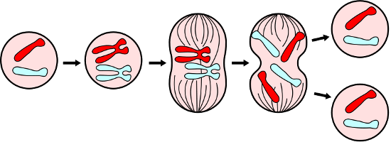

Brustkrebs
Docetaxel wurde ursprünglich aus der Eibenrinde gewonnen.

Klicke hier,
um Dir die räumliche Struktur von Docetaxel anzusehen.
Bei der Zellteilung spielen so genannte Motor-Proteine eine wichtige Rolle. Sie sorgen für die Verteilung der DNA auf die beiden neuen Tochterzellen während der Zellteilung.

Zellteilung (Quelle: Wikipedia)Wie verhindert Docetaxel die Zellteilung?
Docetaxel passt perfekt in den "Tankdeckel" des Motor-Proteins und verhindert damit die Verteilung und damit eine erfolgreiche Zellteilung.Natürlich hat ein Molekül keinen Tankdeckel, gemeint ist hier ein für die Funktion des Moleküls wichtiger Bereich des Motor-Proteins, seine Bindetasche.
Klicke hier, um Dir die Bindetasche näher anzusehen.
zurück
Startseite